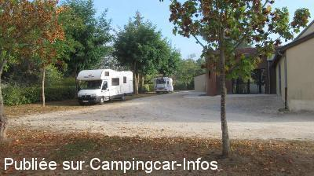
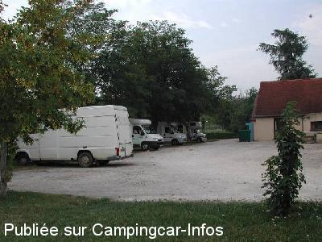

APN = Parking toléré jour/nuit de :
PINSAC
(N° 603)
Accès/adresse :
D43
46200 PINSAC
46200 PINSAC
Latitude : (Nord) 44.8547° Décimaux ou 44° 51′ 16′′
Longitude : (Est) 1.5127° Décimaux ou 1° 30′ 45′′
Tarif : Gratuit
Services :
Tous commerces
Autres informations :
10 emplacements
Tel : +33 (0)565 326 400

Le 19/09/2012 par GILLES 33

Le 02/08/2004 par patrice.LFE
de
GILLES 33
le 19/09/2012 :
Nous avons passé une nuit calme sur ce parking ,bien que l'aire de service n'existe plus,dans le local
sanitaires se trouve un point d'eau fonctionnel(hors gel..?),avec tuyau flexible (10m) sur enrouleur + pistolet pour le remplissage réserve eau du CC.
Sanitaire propre tout équipé ... papier wc,lavabo + savon liquide, sèche mains électrique .
Merci à la municipalité.
Nous avons passé une nuit calme sur ce parking ,bien que l'aire de service n'existe plus,dans le local
sanitaires se trouve un point d'eau fonctionnel(hors gel..?),avec tuyau flexible (10m) sur enrouleur + pistolet pour le remplissage réserve eau du CC.
Sanitaire propre tout équipé ... papier wc,lavabo + savon liquide, sèche mains électrique .
Merci à la municipalité.
de
papyvelo
le 11/10/2010 :
De passage fin aout, cette aire n'existe plus pour les services, plus d'eau, plus de vidange. Nous avons quand même passé une nuit très agréable. §
De passage fin aout, cette aire n'existe plus pour les services, plus d'eau, plus de vidange. Nous avons quand même passé une nuit très agréable. §
de
wilson 33
le 10/08/2008 :
Aire très calme pour passer la nuit. Tranquille et ombragée. Je confirme que la borne ne fonctionne pas.
Aire très calme pour passer la nuit. Tranquille et ombragée. Je confirme que la borne ne fonctionne pas.
de
Chantal et Jean Luc
le 30/05/2008 :
Je ne pense pas qu'il y ait de la place pour 10 CC mais c'est un petit coin très sympa et tranquille et pas très loin pour les visiteurs de Padirac. La borne ne fonctionne plus, mais ce n'est pas ça qui manque dans la région.
Je ne pense pas qu'il y ait de la place pour 10 CC mais c'est un petit coin très sympa et tranquille et pas très loin pour les visiteurs de Padirac. La borne ne fonctionne plus, mais ce n'est pas ça qui manque dans la région.